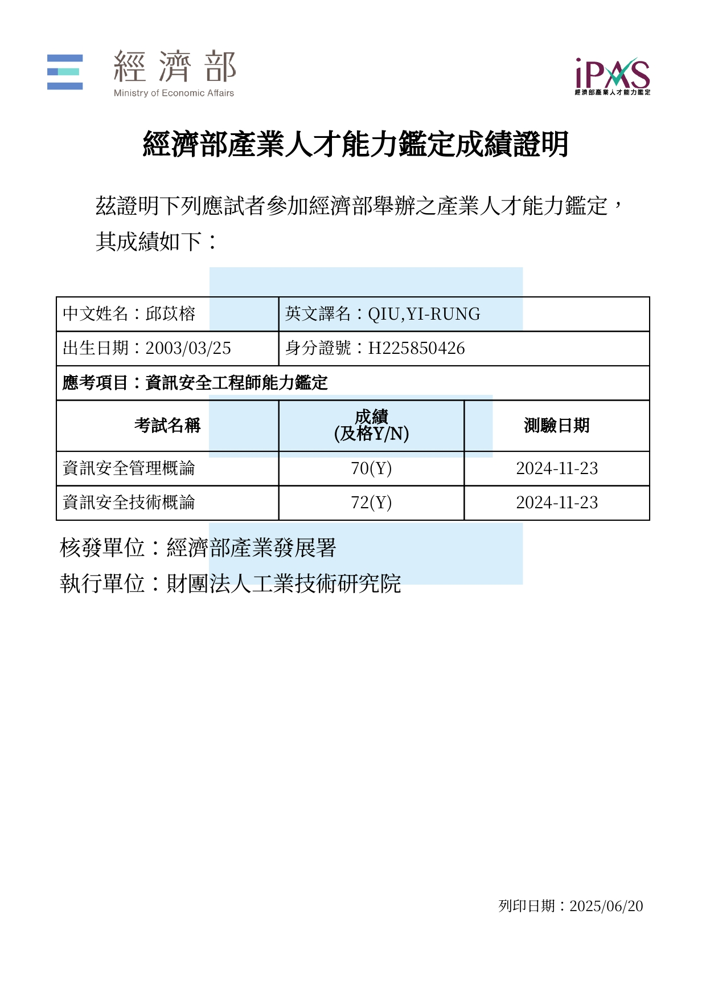
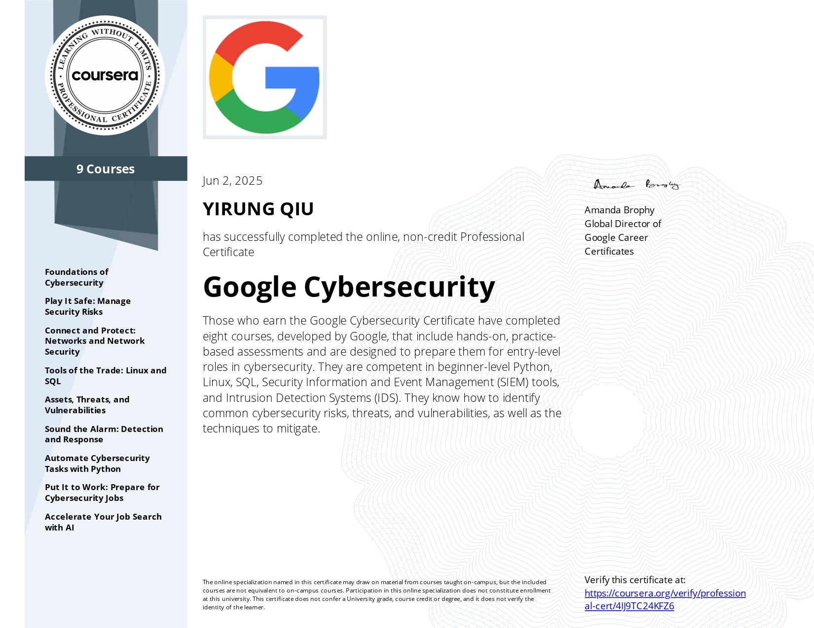
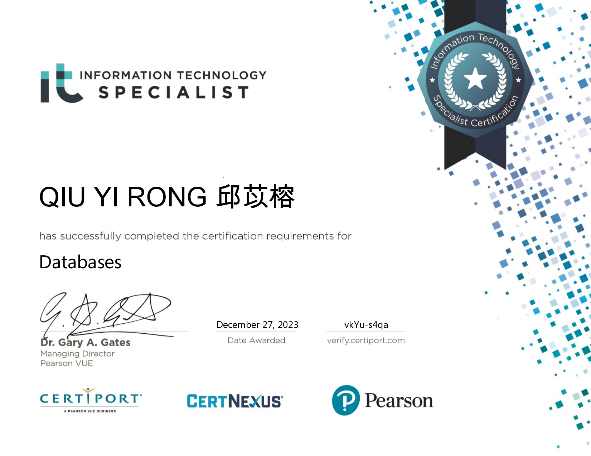

邱苡榕的資安證照集
這是一份整合本人資安領域專業證照的作品展示頁，包括政府鑑定、國際課程與技能認證。
✅ iPAS 資訊安全工程師能力鑑定（2024）
測驗科目：資訊安全管理與技術
單科成績皆超過 70 分

✅ Google Cybersecurity Professional Certificate（2025）
8 門課程，含 Linux、SIEM、SQL、Python、自動化與資安威脅應對

✅ IT Specialist: Databases（2023）
熟悉 SQL、資料表設計與資料管理
